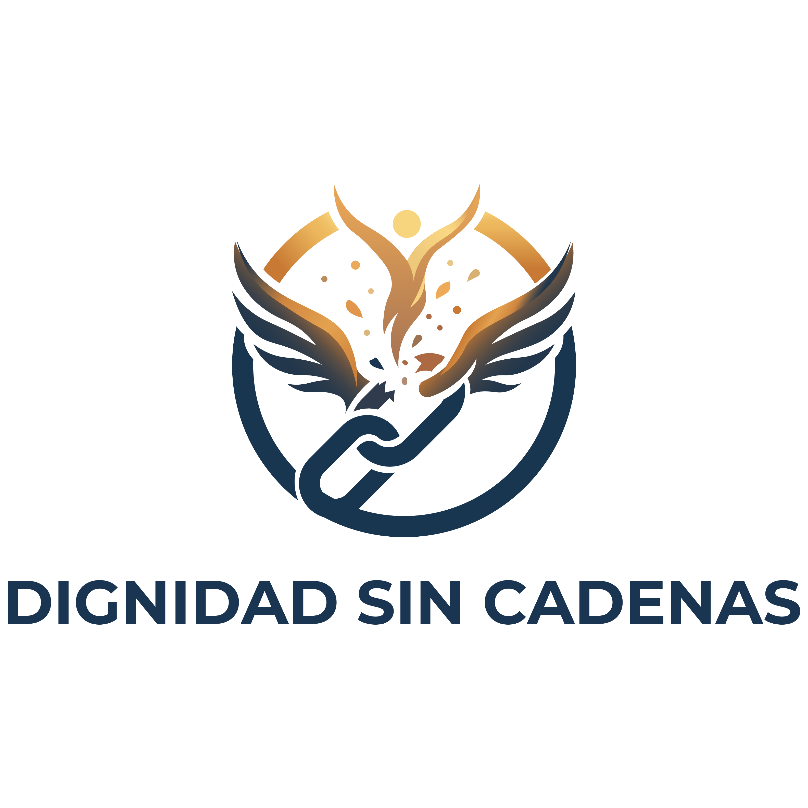
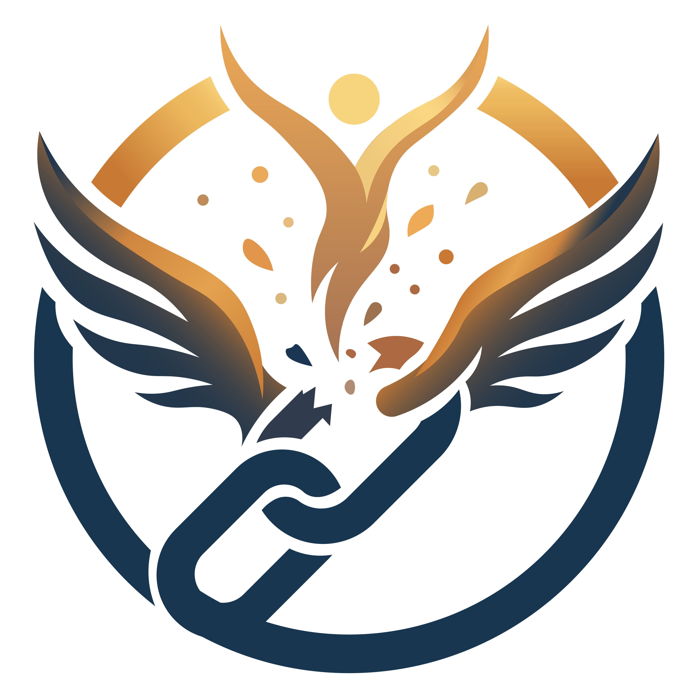
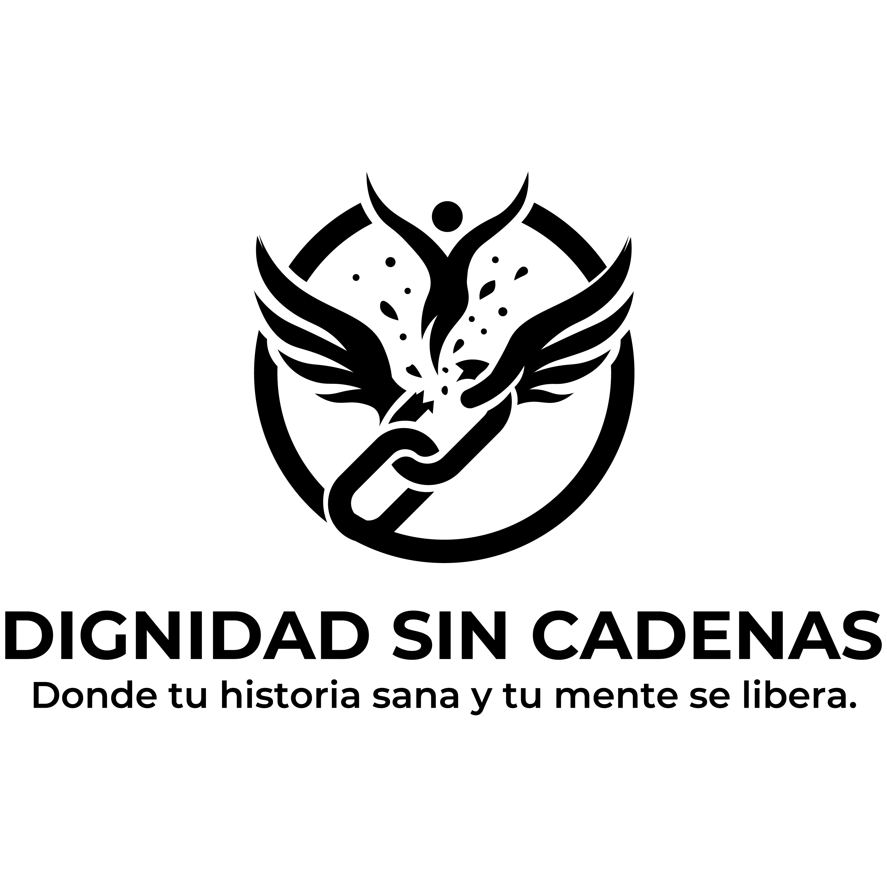
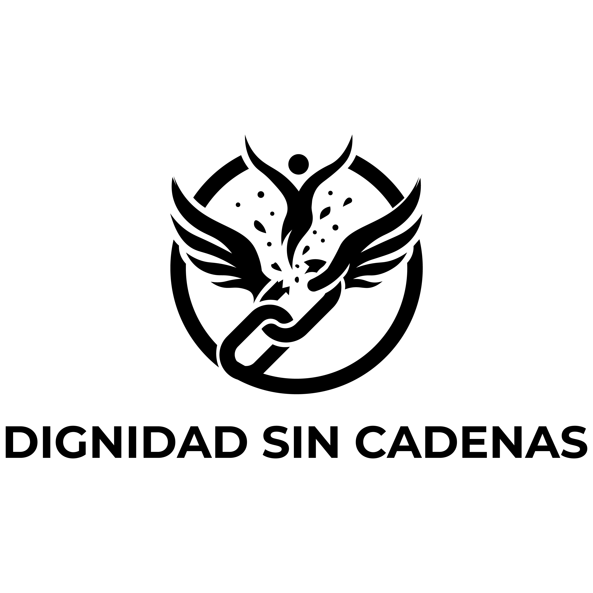
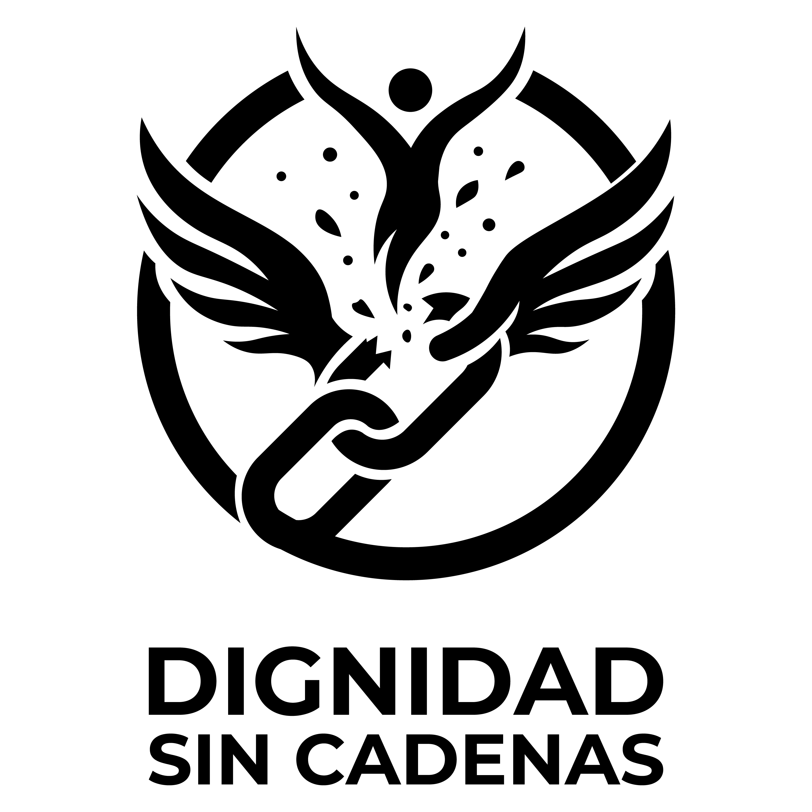

Taller de habilidades socioemocionales
Espacio formativo para el desarrollo de competencias emocionales y sociales, orientado a personas en proceso de reintegración.
Donde tu historia sana y tu mente se libera
Acompañamos procesos de reintegración social, salud mental y reconstrucción de proyectos de vida con un enfoque centrado en la persona, la dignidad humana y el crecimiento sostenible.
Intervenciones diseñadas para acompañar cada etapa del proceso de transformación personal y reintegración.
Procesos individuales y grupales para el fortalecimiento de la salud mental y el bienestar emocional.
Consultar disponibilidadTalleres y formación práctica para el desarrollo de habilidades personales, sociales y laborales.
Cupo limitadoEstrategias de acompañamiento comunitario para facilitar la reinserción en el entorno social y familiar.
Consultar disponibilidadMetodología estructurada para la construcción y seguimiento de un plan de vida con metas alcanzables.
Cupo limitadoCada acompañamiento sigue una ruta clara pensada para garantizar la continuidad y el bienestar de la persona.
Acercamiento inicial y orientación sobre los programas disponibles.
Evaluación de necesidades y diseño de una ruta personalizada.
Intervención continua con seguimiento profesional y comunitario.
Medición de avances y ajuste de estrategias según el progreso.
Aquí se integrarán testimonios reales autorizados por la organización en futuras etapas del proyecto.
Dignidad Sin Cadenas nació de la convicción de que toda persona, sin importar su historia o sus circunstancias, es capaz de transformarse y construir una vida plena. La organización surge como respuesta a la necesidad de acompañamiento integral en procesos de reintegración social y salud mental en nuestra comunidad.
Desde nuestros inicios trabajamos con un enfoque humanista centrado en la persona, reconociendo la dignidad inherente de cada individuo como punto de partida irrenunciable de cualquier intervención.
A través de programas de capacitación, acompañamiento psicológico y construcción de proyectos de vida, generamos espacios seguros donde la historia personal se convierte en punto de partida para la transformación.
Acompañar a personas en procesos de transformación personal, reintegración social y reconstrucción de su proyecto de vida, desde un enfoque de dignidad humana, respeto y desarrollo integral.
Ser una organización de referencia en acompañamiento psicosocial y desarrollo humano, reconocida por generar transformaciones sostenibles y promover la reintegración digna en la comunidad.
Nuestra metodología parte del principio de que el cambio verdadero surge desde adentro. No intervenimos sobre las personas; las acompañamos para que descubran sus propias fortalezas y construyan el camino que les pertenece.
Profesionales comprometidos con la dignidad y el desarrollo humano. (Perfiles en actualización.)
Cada programa responde a una necesidad específica dentro del proceso de transformación y reintegración.
Apoyo profesional para la salud mental y el bienestar emocional individual y grupal.
Formación práctica en habilidades personales, sociales y para el trabajo.
Estrategias de acompañamiento para la reinserción digna en el entorno social y familiar.
Construcción y seguimiento de un plan de vida con metas alcanzables y concretas.
Talleres, conferencias y actividades formativas organizadas por Dignidad Sin Cadenas.
[Fechas y horarios en actualización]

Espacio formativo para el desarrollo de competencias emocionales y sociales, orientado a personas en proceso de reintegración.

Encuentro académico y comunitario para reflexionar sobre la importancia del acompañamiento psicosocial en los procesos de reintegración.

Módulo práctico de capacitación laboral con orientación a habilidades técnicas y blandas aplicadas al mercado local.
La programación se actualiza periódicamente. Contáctanos para recibir notificaciones.
Cada persona que pasa por nuestros programas tiene una historia única. Aquí compartiremos, con su autorización, testimonios de transformación real.
Las historias presentadas son representativas del tipo de acompañamiento que brindamos. Los contenidos con identidades reales serán integrados con autorización expresa de los participantes en futuras etapas del proyecto.

Historia representativa de un proceso de reintegración social acompañado por el equipo de Dignidad Sin Cadenas. [Historia real pendiente de autorización]

Testimonio representativo de un proceso de acompañamiento psicológico en el marco del programa de salud mental. [Historia real pendiente de autorización]

Historia representativa del proceso de construcción de proyecto de vida, desde la evaluación inicial hasta el seguimiento de metas. [Historia real pendiente de autorización]
Trabajamos en red con instituciones, organizaciones y actores comunitarios que comparten nuestra visión del desarrollo humano con dignidad.
Los aliados se confirmarán conforme avance el proyecto. Si tu organización desea colaborar, contáctanos.
Si deseas información sobre nuestros programas, tienes una consulta o quieres colaborar con la organización, escríbenos. Respondemos a la brevedad posible.
Gracias por contactarnos. Revisaremos tu mensaje y te responderemos a la brevedad posible.
Reunimos las preguntas más comunes sobre nuestros servicios, procesos y programas.
Nuestros programas están orientados a la accesibilidad. La información sobre costos y disponibilidad de apoyos se proporcionará directamente al momento del primer contacto, según el programa y las circunstancias individuales de cada persona. Contáctanos para más información.
El proceso inicia con un primer contacto a través de nuestro formulario, teléfono o correo electrónico. Posteriormente se realiza una entrevista de diagnóstico para identificar las necesidades y diseñar una ruta personalizada. No se requiere ningún requisito previo para acercarse.
Sí. La confidencialidad es uno de nuestros valores fundamentales. Todo lo que compartas en el proceso de acompañamiento está protegido por principios éticos profesionales y por nuestro Aviso de Privacidad. La información personal nunca se comparte sin tu consentimiento explícito, salvo en los casos que la ley expresamente lo requiera.
Nuestros programas están dirigidos a personas que se encuentran en procesos de reintegración social, así como a sus familias y redes de apoyo. No discriminamos por razón de género, edad, origen, religión ni situación legal. Si tienes dudas sobre si aplicas, contáctanos y te orientamos.
Actualmente operamos en la comunidad local. La expansión geográfica forma parte de nuestra visión a mediano plazo. [Información de cobertura específica pendiente de actualización]
Puedes colaborar de varias formas: como voluntario, como aliado institucional, mediante donaciones o difundiendo nuestra misión. Visita la sección de Donaciones o escríbenos para explorar opciones de colaboración.
La duración varía según las necesidades de cada persona y el programa al que accede. Puede ir desde intervenciones breves de apoyo en crisis hasta procesos de varios meses de acompañamiento continuo. Todo se define de manera individualizada en la fase de diagnóstico.
Puedes ejercer tus derechos de Acceso, Rectificación, Cancelación y Oposición (ARCO) contactándonos directamente. Los procedimientos y plazos específicos se detallan en nuestro Aviso de Privacidad. Respondemos en un plazo máximo de 20 días hábiles.
Última actualización: [Pendiente de validación legal]
Este aviso de privacidad está en proceso de elaboración con asesoría legal. El contenido presentado es un borrador estructural sujeto a revisión y validación profesional antes de su publicación definitiva.
Dignidad Sin Cadenas, con domicilio en [Dirección pendiente de validación], es responsable del uso y protección de sus datos personales.
Para las finalidades señaladas en este aviso, podemos recabar los siguientes datos personales:
Sus datos personales serán utilizados para las siguientes finalidades primarias:
Finalidades secundarias (puede oponerse sin afectar el servicio):
Usted tiene derecho a Acceder, Rectificar, Cancelar u Oponerse al tratamiento de sus datos personales (derechos ARCO). Para ejercerlos, puede presentar su solicitud a:
Correo: [Pendiente de actualización]
Domicilio: [Pendiente de actualización]
Responderemos en un plazo máximo de 20 días hábiles a partir de la recepción de su solicitud.
Sus datos personales no serán transferidos a terceros sin su consentimiento, salvo en los casos previstos por la Ley Federal de Protección de Datos Personales en Posesión de los Particulares (LFPDPPP).
El presente aviso puede sufrir modificaciones. Cualquier cambio será notificado a través del sitio web y, cuando corresponda, mediante comunicación directa con los titulares.
Este aviso de privacidad está sujeto a la legislación mexicana vigente en materia de protección de datos personales. [Validación legal pendiente]